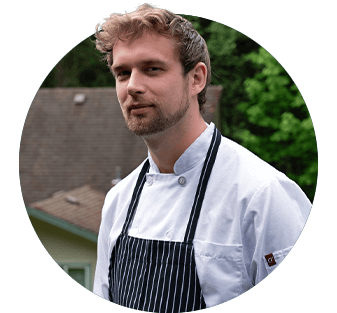

Seasonal plates shaped by coast, orchard and hive
At Foragers, the kitchen is guided by the same seasons that shape the orchard. What arrives on your table begins in field and forest, in hive and harvest.
The Philosophy
Great food does not compete with its ingredients.
It reveals them.
This is our belief.
Our culinary approach draws from the agricultural richness of the Sunshine Coast: local fisheries, small farms, foraged elements, and estate-grown honey and fruit. Dishes are built around balance — brightness against depth, texture against softness, salt against floral lift.
Mead is not simply served alongside the food. It informs it. You may find estate honey folded into a vinaigrette, a barrel-aged mead reduced into sauce, or orchard fruit layered through a dessert. What is poured in your glass may echo on your plate.
This is not novelty. It is continuity.
The Dinner Menu
Seasonal plates and meals, shared in good company
Our kitchen works in step with the season, drawing from the coast, the orchard, and the quiet richness of the surrounding landscape.
Seafood arrives fresh from coastal waters. Produce follows the cadence of nearby farms. Root vegetables, orchard fruit and wild botanicals appear as the seasons change, guiding the direction of the menu throughout the year.
Expect elegantly crafted plates designed that reflect elevated influences, shaped by our team’s experience in fine dining kitchens. Each dish is built with intention and respect for the ingredients at their peak.
Please note that while we do our best to support dietary needs, we cannot guarantee the ability to accommodate vegan diets.
The Cocktail Menu
Composed for the table, expressed in the glass
Our cocktails are guided by the same seasons as the kitchen, shaped by estate honey, orchard fruit, bright botanicals, and house-made ferments.
Each drink is composed with intention: layered, aromatic, and quietly expressive of the season. Built for the table, meant to unfold over time.
From the Kitchen
Master of season, place and plate

Chef Adam MacIsaac
The kitchen at Foragers is led by Chef Adam MacIsaac, whose cooking reflects a deep respect for season, landscape, and ingredient.
Before joining Foragers, Adam served as Chef de Cuisine at the Wickaninnish Inn, the renowned Relais & Châteaux property in Tofino, where he was shaping hyper-seasonal menus celebrating the wild biodiversity of Vancouver Island.
His culinary path has also taken him through celebrated kitchens in Italy, the United Kingdom, and Canada, including Casa Buono, Mauro Colagreco at Raffles, The Fat Duck, and Eden in Alberta.
Across these kitchens, Adam developed a style that is refined, thoughtful, and grounded: food that highlights the ingredient first, guided by place and careful craft.
At Foragers, he works closely with the orchard, apiary, and regional producers to create menus that evolve with the harvest, bringing honey, fruit, coastal seafood, and wild botanicals naturally to the table.
Explore our current releases
Our seasonal offerings are available in the tasting room. Join us for a guided tasting flight or discover a bottle to enjoy at your table.